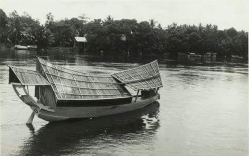

Tentang Kalang Rengas
Kalang Rengas ialah sebuah inisiatif komuniti di Hulu Terengganu yang menjadikan warisan alam dan budaya sebagai teras pelancongan. Didorong oleh semangat kerjasama komuniti Kampung Gunung, projek ini digerakkan oleh Kelab Rukun Tetangga (KRT) dan Kelab Belia tempatan sejak awal penubuhan.
Kami percaya bahawa pengalaman yang bermakna datang daripada interaksi tulen dengan komuniti dan persekitaran. Oleh itu, pelancong bukan sahaja menikmati keindahan semula jadi seperti "Little Amazon", tetapi juga merasai kehidupan kampung, seni warisan, dan budaya masyarakat kami.
Melalui CBT (Community-Based Tourism), kami memperkasakan penduduk setempat, melestarikan alam, dan membuka peluang ekonomi berasaskan pelancongan mapan.